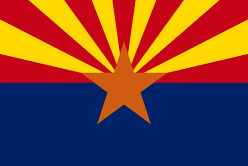

About Me
My name is Aurora. I was born in California and lived in Nebraska for a time, but I currently live in Arizona. I currently work as a secretary at a flooring company where they also are having me help with some of their marketing efforts. I love reading, and my favorite book is Pride and Prejudice. I also love to go country swing dancing, and started learning this February.
Arizona

Arizona is the 48th state in the United States of America and is located in the southwest. It is known for the Grand Canyon and its deserts and mountains. Arizona is one of only two states that does not observe Daylight Savings Time. The "5 C's" of Arizona's economy are copper, cattle, cotton, citrus, and climate.